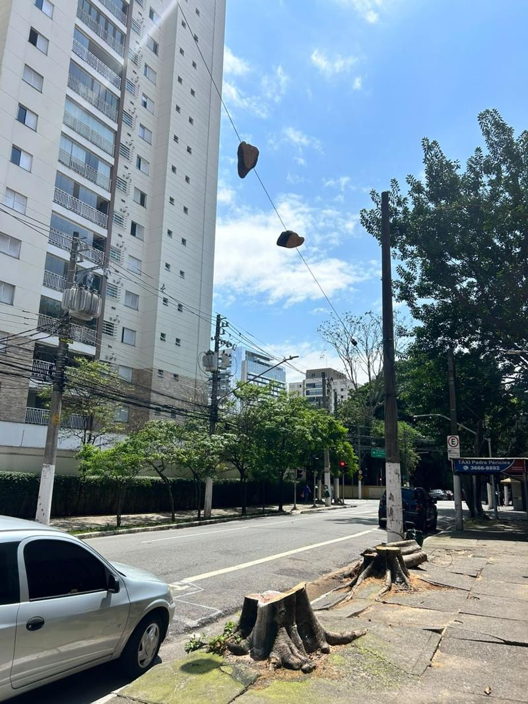

Sobre o Alerta Árvore SP
Para que a vizinhança saiba de uma poda ou remoção de árvore enquanto ainda dá tempo de agir.
Por que existe

Em outubro de 2026, oito árvores saudáveis foram cortadas numa só manhã no Largo Padre Péricles. Segundo a Guarda Civil Metropolitana, o corte veio de um processo aberto depois que alguém se acidentou nas raízes da calçada, e que tramitou por cerca de um ano e meio. Ninguém da vizinhança soube até a motosserra chegar.
Essas decisões são públicas, mas ficam escondidas no Diário Oficial, entre milhares de outras publicações. O Alerta lê o Diário todos os dias e mostra no mapa onde há poda ou remoção autorizada e até quando dá para recorrer.
O que descobrimos
A Subprefeitura do Jabaquara publica em dados abertos a planilha em que registra quando cada serviço foi executado. Cruzamos essa planilha com o Diário Oficial, caso a caso.
Quando o corte acontece junto com a publicação, o aviso deixa de servir para o que existe. As outras 31 subprefeituras não publicam esses dados, então não sabemos como é nelas.
Ver os casos e como verificamos
| Endereço | Espécie | Publicado | Executado | Dias | |
|---|---|---|---|---|---|
| Carregando… | |||||
Só contamos casos em que a publicação existe no Diário na data da planilha, o endereço confere e a linha registra apenas a remoção. 4 das árvores estavam registradas como secas. Fonte: Planilha de Manejo Arbóreo, Subprefeitura Jabaquara (atualizada até dezembro de 2025).
Limites
- A leitura é automática e pode errar endereço, quantidade ou prazo. Confira sempre a publicação original.
- Decisões judiciais, como a do Largo Padre Péricles, não aparecem no mapa.
- Não sabemos se houve recurso nem quando a árvore foi de fato cortada.
- Nomes de moradores e de responsáveis técnicos são ocultados.
Como pressionar
. Protocolou um recurso? Mande uma foto da via carimbada para o e-mail do projeto.
- Peça os dados à sua subprefeitura pela Lei de Acesso à Informação, no e-SIC da Prefeitura. A resposta deve vir em até 20 dias.
- Leve o tema ao CADES Regional e ao Conselho Participativo do seu bairro.
- Procure vereadores da sua região e peça um requerimento de informação.
Modelo de pedido pela Lei de Acesso à Informação
Quem faz
O Alerta Árvore SP é um projeto independente criado por Karina Nishioka. O código é aberto.
Erros, relatos ou vontade de ajudar: alertaarvoresp@gmail.com